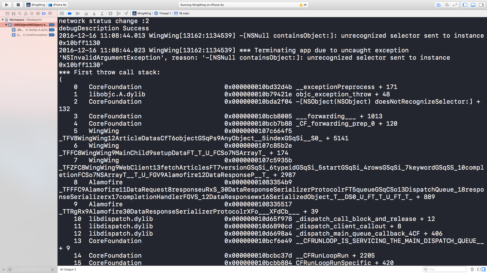
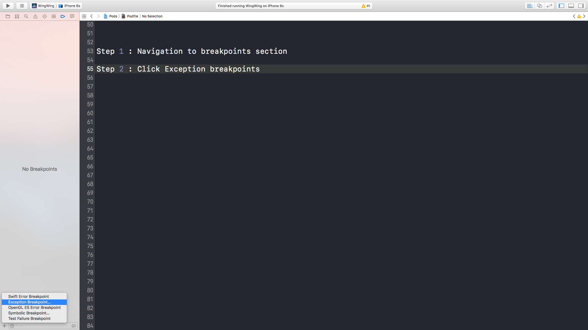
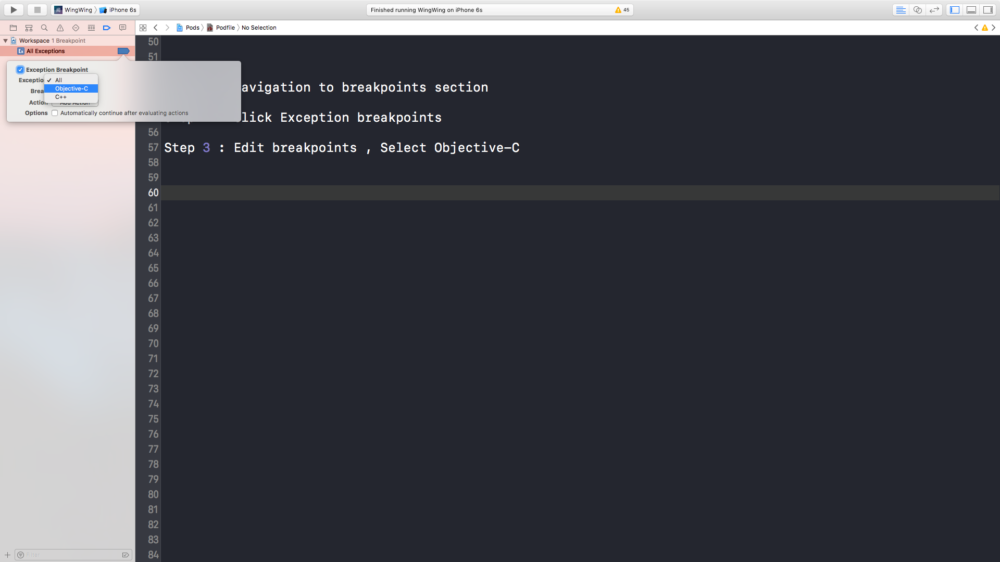

Provide easy way to solve this horrible problem
While developing iOS application , you probably face this kind of error a lot

The easiest way is create a exception breakpoint


Run and build , the breakpoint should stop at where caused this error .